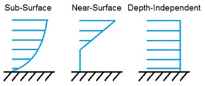

4.12.1. 입력 파일
사용자는 기본 SeaState 입력 파일을 통해 해상 상태 모델 매개변수를 구성합니다. 독립형 모드에서 사용하는 경우 추가 드라이버 입력 파일이 필요합니다. 이 드라이버 파일은 일반적으로 OpenFAST가 SeaState에 제공하는 초기화 입력을 지정합니다.
행 수가 지정된 테이블을 제외하고는 입력 파일에서 행을 추가하거나 제거해서는 안 됩니다.
4.12.1.1. 단위
SeaState는 SI 시스템(kg, m, s)을 사용합니다.
4.12.1.2. SeaState 드라이버 입력 파일
드라이버 입력 파일은 SeaState의 독립형 버전에만 필요하며 일반적으로 OpenFAST에서 생성된 입력을 포함합니다. 분리된 모델의 경우 해상 상태를 제어하는 것이 필요합니다. SeaState 드라이버 입력 파일의 예는 부록 B에 나와 있습니다.
다음을 설정합니다: Echo 원하는 경우 이 파일의 플래그를 TRUE로 지정하세요.
SeaStateDriver 드라이버 입력 파일의 내용을 에코합니다(드라이버 파일의 오류를 디버깅하는 데 유용함). 에코 파일의 명명 규칙은 다음과 같습니다. OutRootName.dvr.ech. OutRootName 드라이버 입력 파일의 SEASTATE 섹션에 지정됩니다. 다음을 사용하여 중력 상수를 설정합니다. Gravity 매개변수. SeaState는 크기를 예상하므로 SI 단위에서는 9.80665로 설정됩니다. \(\frac{m}{s^{2}}\).
WtrDens 물의 밀도를 지정하며 0보다 크거나 같은 값이어야 합니다. 바닷물의 일반적인 값은 약 1025kg/m입니다.3. WtrDpth MSL를 기준으로 수심(평평한 해저의 깊이)을 지정하며 0보다 큰 값이어야 합니다. MSL2SWL MSL와 SWL 사이의 오프셋이며, SWL가 MSL보다 높으면 양수입니다. SeaStateInputFile 기본 SeaState 입력 파일의 파일 이름입니다. 이 이름은 따옴표로 묶어야 하며 절대 경로 또는 상대 경로를 포함할 수 있습니다.
WrWvKinMod SeaState 드라이버의 파동 운동학 출력을 제어합니다. 0으로 설정하면 파동 운동학의 드라이버 출력이 억제됩니다. 드라이버는 전역 원점(0,0)에서 파고 시계열을 별도의 출력으로 출력합니다. .Elev 다음과 같은 경우 파일을 제출하세요. WrWvKinMod = 1. 이 파일은 유효한 파일로도 사용됩니다. WvKinFile 대해 WaveMod = 기본 SeaState 입력 파일의 5(외부 생성 파고 시계열). 만약에 WrWvKinMod = 2, SeaState는 확장자가 있는 8개 출력 파일의 모든 파동 그리드 지점에서 전체 파동 운동학(속도, 가속도, 동적 압력 및 파고 고도)을 출력합니다. .Vxi, .Vyi, .Vzi, .Axi, .아이, .Azi, .DynP, 및 .Elev. 속도 및 가속도 출력은 모두 지구에 고정된 전역 좌표계에 있습니다. 이 파일은 다음과 같이 유효합니다. WvKinFile 대해 WaveMod = 6(외부에서 생성된 전체 파동 운동학 시계열)이며 사용자가 자신의 입력 파일을 작성하려는 경우 템플릿으로 사용할 수 있습니다. WaveMod = 6. NSteps 시뮬레이션 시간 단계 수를 지정합니다. TimeInterval 단계 사이의 시간을 지정합니다. WaveElevSeriesFlag 확장자를 가진 파일을 출력하려면 TRUE로 설정할 수 있습니다. .WaveElev.out여기에는 시각화 목적을 위해 각 시간 단계의 파고 필드가 포함되어 있습니다. FALSE로 설정하면 이 출력이 억제됩니다. 그리드 포인트는 WrWvKinMod = 2 및 WaveElevSeriesFlag = TRUE는 둘 다 아래 설명된 기본 SeaState 입력 파일의 SPATIAL DISCRETIZATION 섹션에 의해 제어됩니다.
4.12.1.3. SeaState 기본 입력 파일
SeaState 기본 입력 파일의 예가 부록 A에 나와 있습니다.
4.12.1.3.1. 환경 조건
환경 조건은 이제 드라이버 입력 파일에 지정되지만 레거시 호환성을 위해 기본 입력 파일에 남아 있습니다. 드라이버 입력 파일에 지정된 값을 전달하려면 키워드 DEFAULT를 사용하십시오. 그렇지 않으면 기본 입력 파일에 제공된 값이 드라이버 입력 파일에 제공된 값을 덮어씁니다. WtrDens 물의 밀도를 지정하며 0보다 크거나 같은 값이어야 합니다. 바닷물의 일반적인 값은 약 1025kg/m입니다.3. WtrDpth MSL 참조를 기준으로 수심(평평한 해저의 깊이)을 지정하며 0보다 큰 값이어야 합니다. MSL2SWL MSL와 SWL 사이의 오프셋이며, SWL가 MSL보다 높을 때 양수입니다. 이 매개변수는 하부 구조 형상 정보를 변경하지 않고도 조수 또는 폭풍 해일 해수면 변화의 영향을 시뮬레이션할 때 유용합니다. 이 매개변수는 다음에서 사용되지 않습니다. WaveMod = 6이고 포텐셜 유동 모델을 사용하는 경우 0으로 설정해야 합니다(PotMod = 1 또는 2) HydroDyn.
4.12.1.3.2. 공간 이산화
SPATIAL DISCRETIZATION 섹션은 웨이브 그리드 생성을 제어합니다. 이 파동 그리드는 주로 HydroDyn에서 사용되지만 OpenFAST의 다른 모듈에서도 수중 구조물에 대한 유체 역학 및 정수압 하중을 계산하는 데 사용됩니다. HydroDyn의 띠 이론 부재가 하중을 평가할 때 구조물의 순간 변위 위치에서 파동 운동학과 동적 압력을 사용할 수 있도록 파동 그리드가 추가되었습니다. 또한 높은 바람 추력으로 인한 것과 같은 수평면의 큰 표류 운동을 기반으로 HydroDyn의 포텐셜 유동 파동을 보정할 수 있습니다.
OpenFAST의 이전 버전에서는 스트립 이론 부재에 대한 포텐셜 유동 파동 여기 및 파동장이 변위되지 않은 위치의 구조로 미리 계산되었습니다. 이 작동 모드는 더 이상 OpenFAST에 존재하지 않으며 사용자가 HydroDyn에서 스트립 이론 및/또는 포텐셜 유동 유체 역학 하중을 평가할 때 구조 변위를 고려하지 않기로 선택한 경우에도 파동 그리드를 항상 정의해야 합니다.
현재 SeaState 웨이브 그리드는 항상 전역 원점의 중심에 있고 대칭을 기준으로 합니다. XZ-비행기와 YZ-비행기.
X_HalfWidth 전역에서 웨이브 그리드의 절반 너비를 설정합니다(m 단위). X- 웨이브 그리드가 다음 영역을 덮는 방향X_HalfWidth ≤ X ≤ +X_HalfWidth. X_HalfWidth 0보다 커야 합니다.
Y_HalfWidth 전역에서 웨이브 그리드의 절반 너비를 설정합니다(m 단위). Y- 웨이브 그리드가 다음 영역을 덮는 방향Y_HalfWidth ≤ Y ≤ +Y_HalfWidth. Y_HalfWidth 0보다 커야 합니다.
Z_Depth 파도 그리드가 다음 영역을 덮도록 파도 그리드의 깊이(m)를 설정합니다.MSL2SWL − Z_Depth) ≤ Z ≤ MSL2SWL. Z_Depth 0보다 크고 다음보다 작거나 같아야 합니다. MSL2SWL + WtrDpth. 환경 Z_Depth DEFAULT로 자동으로 값을 다음으로 설정합니다. MSL2SWL + WtrDpth.
NX 균일하게 분포된 그리드 점의 수를 설정합니다. X-원점을 포함하여 도메인의 절반에 걸친 방향. 따라서 그리드 포인트의 총 개수는 X-방향은 2와 같습니다.NX−1. NX 2보다 크거나 같아야 합니다.
NY 균일하게 분포된 그리드 점의 수를 설정합니다. Y-원점을 포함하여 도메인의 절반에 걸친 방향. 따라서 그리드 포인트의 총 개수는 Y-방향은 2와 같습니다.NY−1. NY 2보다 크거나 같아야 합니다.
NZ 수직의 그리드 포인트 수를 설정합니다. Z-에서 방향 Z = (MSL2SWL − Z_Depth) 에게 Z = MSL2SWL. 그리드 포인트의 분포 Z-방향이 일정하지 않습니다. 대신 코사인 분포를 따릅니다. Z[n] = Z_Depth(코사인(n·dθ)–1), 여기서 n = 0,1,…,NZ-1과 dθ = π/(2(NZ-1)). 이 분포는 자유 표면 근처에 더 많은 그리드 포인트를 배치합니다. NZ 2보다 크거나 같아야 합니다.
웨이브 그리드를 설정할 때 웨이브 그리드가 세 방향 모두에서 충분히 큰지 확인하여 시뮬레이션 중에 HydroDyn에 정의된 구조의 일부가 웨이브 그리드 밖으로 이동하지 않도록 해야 합니다. 동시에 그리드는 관심 있는 가장 짧은 파동을 해결할 수 있을 만큼 충분히 미세해야 합니다.
OpenFAST는 시뮬레이션 시작 시 파동장 속도, 가속도, 동적 압력 및 파고를 미리 계산하고 저장합니다. 웨이브 그리드를 생성하고 유지하는 것은 긴 시뮬레이션의 경우 메모리 집약적일 수 있습니다. 사용자는 메모리 사용량을 줄이기 위해 웨이브 그리드를 필요한 것보다 더 크거나 더 미세하게 설정하지 않아야 합니다. 감소 WaveTMax 또는 증가 WaveDT (아래 WAVES 섹션 참조) 메모리 사용량도 줄어듭니다. 긴 볏파(방향성 확산 없음)의 경우 X-방향(또는 Y-방향), NY (또는 NX)는 메모리 절약을 위해 최소 허용 값인 2로 줄일 수 있습니다.
4.12.1.3.3. 파도
입력 파일의 WAVES 섹션은 HydroDyn의 스트립 이론 및 포텐셜 유동 모델링에서 사용되는 1차 파동의 내부 생성 또는 외부에서 생성된 파동의 사용을 제어합니다. 이 섹션의 파동 스펙트럼 설정은 1차 파동 주파수 구성요소에만 적용됩니다. 2차 항이 선택적으로 활성화된 경우 - 다음을 참조하세요. 2차 파동 및 2차 부유식 플랫폼 힘 아래 섹션 - 2차 항은 1차 파동 성분 진폭을 사용하여 계산되며 추가 에너지가 파동 스펙트럼에 추가됩니다(차 및 주파수 합산).
WaveMod 입사파 운동학 모델을 지정합니다. 옵션은 다음과 같습니다:
0: 없음 = 정수
1: 규칙적인(주기적인) 파동
1P#: 사용자가 지정한 위상을 갖는 정규(주기)파, 예를 들어 20˚ 위상을 갖는 정규파의 경우 1P20.0(P#이 없으면 위상은 다음에 따라 무작위로 지정됩니다.) WaveSeed); 0˚ 위상은 피크에서 시작하여 시간이 지남에 따라 감소하는 코사인 함수를 나타냅니다.
2: JONSWAP 또는 Pierson-Moskowitz 주파수 스펙트럼을 기반으로 하는 불규칙(확률적) 파동
3: 백색잡음 주파수 스펙트럼을 기반으로 한 불규칙(확률적) 파동
4: 루틴에서 사용자가 정의한 주파수 스펙트럼을 기반으로 하는 불규칙(확률적) 파동 UserWaveSpctrm(); SeaState 독립 실행형 프로그램 또는 OpenFAST를 다시 컴파일해야 합니다.
5: 외부에서 생성된 파고 시계열
6: 외부에서 생성된 전체 파동 운동학 시계열
7: 사용자 정의 파동 주파수 구성 요소
옵션 4에서는 다음이 필요합니다. UserWaveSpctrm() 서브루틴 파도.f90 소스 파일은 사용자가 구현해야 하며 독립 실행형 SeaState 프로그램 또는 OpenFAST를 다시 컴파일해야 합니다. 옵션 5를 사용하면 외부에서 생성된 파고 시계열을 사용할 수 있으며, 이로부터 포텐셜 유동 솔루션의 유체역학적 부하 또는 스트립 이론 솔루션에 사용되는 파동 운동학이 내부적으로 파생됩니다. 옵션 6을 사용하면 스트립 이론 솔루션(그러나 포텐셜 유동 솔루션은 아님)과 함께 사용하기 위해 외부에서 생성된 전체 파동 운동학을 사용할 수 있습니다. 옵션 7을 사용하면 사용자가 파동 주파수 구성 요소(진폭/파도 높이, 위상 및 방향)를 지정할 수 있습니다. 옵션 5, 6, 7을 사용하면 외부에서 생성된 웨이브 데이터가 입력 파일을 통해 제공되며, 모두 루트 이름은 다음과 같습니다. WvKinFile 아래 매개변수.
WaveStMod HydroDyn의 순간 입사파 자유 표면까지 스트립 이론 유체 역학 및 정수압 하중(파도 경사 기여 포함)을 평가할 수 있는 파동 신장 공식을 설정합니다. 현재 수직 스트레칭(옵션 1), 외삽 스트레칭(옵션 2) 및 휠러 스트레칭(옵션 3)의 세 가지 다른 웨이브 스트레칭 공식이 구현됩니다. 세 가지 웨이브 스트레칭 모델 중 하나를 사용하면 HydroDyn가 0이 아닌 파도 기울기의 기여도를 포함하여 순간 자유 표면까지 스트립 이론 부재의 비선형 정수압 하중을 계산하게 됩니다. 환경 WaveStMod 0으로 설정하면 웨이브 스트레칭이 비활성화되고 스트립 이론의 유체 역학 및 정수압 하중은 항상 SWL까지 평가됩니다. 외삽 스트레칭(WaveStMod = 2) 다음의 경우는 지원되지 않습니다. WaveMod = 6(외부에서 생성된 전체 파동 운동학 시계열).
WvCrntMod 결합된 파도와 현재 조건의 모델링을 제어합니다. 다음 효과를 사용하여 0, 1 또는 2로 설정할 수 있습니다.
WvCrntMod 값 |
효과 |
|---|---|
0 |
현재 속도와 가속도가 파도의 속도와 가속도에 추가되는 단순 중첩입니다. 전류는 파도에 직접적인 영향을 미치지 않습니다. 이 옵션은 이전 버전의 OpenFAST 동작을 재현합니다. |
1 |
전류에 대해 보정된 파동 분산 관계를 풀어 파동에 도플러 효과를 포함시킵니다. 입력 파동 스펙트럼/시계열은 전류가 흐르는 지역에서 직접 측정된 것으로 가정되며 SeaState에 의해 수정되지 않습니다. 도플러 효과를 위해 파장이 보정됩니다. |
2 |
파동-전류 상호 작용을 위한 도플러 효과와 파동 진폭/스펙트럼 스케일링을 모두 사용하여 파동과 전류 사이의 완전한 상호 작용. 입력 파동 스펙트럼/시계열은 전류가 없는 지역에서 측정된 것으로 가정하고 전류 속도/방향을 기준으로 재조정됩니다. |
환경 WvCrntMod 1과 2에는 허용되는 파도와 전류에 대한 추가 제한이 적용됩니다.
WvCrntMod 값 |
제한 |
|---|---|
0 |
추가 제한 없음 |
1 |
방향성 확산이 없는 1차 긴 볏파 |
2 |
방향성 확산이 없는 1차 긴 볏파; 동일선상(정렬 또는 반대) 파동 및 해류만; 구현된 진폭/스펙트럼 스케일링은 심해 조건을 가정하지만 이는 확인되지 않습니다. |
엄밀히 말하면 옵션 1과 2는 WvCrntMod 균일한 전류에만 유효합니다. 그러나 전단 전류는 허용되며, 파도와 관련된 깊이까지 표면 근처의 전류 프로파일이 합리적으로 균일한지 확인하는 것은 사용자의 몫입니다. SeaState는 파도에 대한 전류의 영향을 계산할 때 단순히 정수위에서 현재 속도를 취합니다. 향상된 파동 모델링은 해양 유체 역학 터빈을 시뮬레이션할 때 SeaState 전류 또는 InflowWind의 동적 전류와 함께 사용할 수 있습니다. 후자의 경우 파동-전류 상호작용은 정수위에서의 시간 평균 유속을 기반으로 합니다. 해당되는 경우 WindType InflowWind에서 사용자는 InflowWind의 유동장 그리드가 정수 수준에 도달하는지 확인해야 합니다. WvCrntMod 때 효과가 없습니다 WaveMod = 0 또는 6, 또는 SeaState(CurrMod = 0) 또는 해양 유체 동력학 터빈을 시뮬레이션하는 경우 InflowWind입니다.
WaveTMax 입사 파동 운동학 시계열의 길이를 설정하지만 내부 파동 시계열이 파생되는 역 FFT에 사용되는 주파수 단계도 결정합니다(Δω = 2π/WaveTMax). 언제 WaveMod = 7(사용자 정의 파동 주파수 구성 요소), 사용자가 지정한 모든 주파수 구성 요소는 정수 배수여야 합니다. Δω 허용되는 최저 주파수는 다음과 같으며 Δω. 만약에 WaveTMax 전체 시뮬레이션 시간보다 짧은 경우 SeaState는 다음과 같은 주기를 갖는 반복 파동 운동학을 구현합니다. WaveTMax; WaveTMax 다음의 경우 총 시뮬레이션 시간보다 짧아서는 안 됩니다. WaveMod = 5. WaveDT 파동 운동학 시계열의 시간 단계를 결정하지만 역 FFT(ω최대 = π/WaveDT). 언제 WaveMod = 7, WaveDT 사용되지 않으며, 적절한 시간 간격은 사용자가 정의한 주파수 구성 요소를 기반으로 내부적으로 결정됩니다. 불규칙한 바다 상태를 모델링할 때 다음을 권장합니다. WaveTMax 최소 1시간(3600초)으로 설정해야 합니다. WaveDT 파동 스펙트럼과 파동 운동학의 충분한 분해능을 보장하려면 0.1~1.0s 범위의 값이어야 합니다. SeaState가 OpenFAST에 결합되면, WaveDT OpenFAST의 글루 코드 시간 간격과 별도로 임의로 지정될 수 있습니다(파동 운동학은 필요에 따라 시간에 맞춰 보간됩니다). WaveDT 다음과 같은 경우 OpenFAST의 글루 코드 시간 단계와 같아야 합니다. WaveMod = 6. WaveTMax 및 WaveDT SeaState 웨이브 그리드가 사용하는 메모리 양에도 영향을 미칩니다. 더 짧은 WaveTMax 그리고 더 길다 WaveDT 메모리 사용을 줄입니다.
내부 발생파의 경우 규칙파의 파고(최고에서 골까지, 진폭의 2배)와 불규칙파의 유효파고는 다음과 같이 설정됩니다. WaveHs (다음 경우에만 사용됩니다. WaveMod = 1, 2 또는 3). 규칙파의 파주기와 불규칙파의 피크-스펙트럼 파주기는 다음과 같이 제어됩니다. WaveTp 매개변수(다음 경우에만 사용됨) WaveMod = 1 또는 2). WavePkShp JONSWAP 불규칙파 스펙트럼의 피크 모양 매개변수입니다. WaveMod = 2). 세트 WavePkShp IEC 61400-3 Annex B에서 권장되는 값을 얻으려면 DEFAULT를 사용하세요. 이는 피크 스펙트럼 주기와 유효 파고를 기반으로 도출됩니다[IEC, 2009]. 세트 WavePkShp Pierson-Moskowitz 스펙트럼의 경우 1.0으로 변경됩니다.
WvLowCOff 및 WvHiCOff 1차 파동 스펙트럼의 하한 및 상한 차단 주파수(rad/s 단위)를 제어합니다. 1차 파동 성분 진폭은 각각 이러한 차단 주파수 아래와 위에서 0으로 설정됩니다. WvLowCOff 계산 비용을 최소화하기 위해 1차 파동 스펙트럼의 낮은 에너지 한계보다 낮게 설정될 수 있습니다. 적절한 상위 차단 주파수 설정(WvHiCOff)은 또한 계산 비용을 최소화하고 파괴파 한계에 접근할 때 비물리적 효과를 방지하고 스트립 이론 솔루션을 사용할 때 고주파수(즉, 짧은 파장)에서 비물리적 파력을 피하는 데 중요합니다. WvLowCOff 및 WvHiCOff 다음과 같은 경우에는 사용되지 않습니다. WaveMod = 0, 1 또는 6.
WaveDir (다음에는 사용하지 않음 WaveMod = 0 또는 6)은 평균 파동 전파 방향(도)이고 범위(-180,180] 내에 있어야 합니다. 방향이 0이면 양의 X축 방향의 파동 전파에 해당하고, 방향이 90은 양의 Y축 방향의 파동 전파에 해당합니다. WaveDirMod 파동 방향 확산 모델을 지정합니다(다음 경우에만 사용됨). WaveMod = 2, 3, 4). 환경 WaveDirMod 0으로 설정하면 방향성 확산이 비활성화되어 긴 볏(평면 진행형) 바다 상태가 전파됩니다. WaveDir 방향. 환경 WaveDirMod 1로 평균 전파 방향을 사용하여 짧은 볏 바다 상태의 모델링을 가능하게 합니다. WaveDir, 일반적으로 사용되는 코사인 확산 함수(COS:sup:2S) 확산 계수를 기반으로 방향성 확산 스펙트럼을 정의합니다(S)를 통해 정의됨 WaveDirSpread. 파동 방향 확산 스펙트럼은 다음을 사용하여 동일 에너지 방법으로 이산화됩니다. WaveNDir 동일한 에너지 저장소의 수. WaveNDir 은 1(1, 3 또는 5…)보다 크거나 같은 홀수 값의 정수이지만 SeaState는 지정된 값을 약간 증가시킬 수 있습니다. WaveNDir 각 방향 상자 내에 동일한 수의 파동 구성 요소가 있는지 확인합니다. 환경 WaveNDir = 1은 설정과 동일합니다. WaveDirMod = 0. 방향 확산 범위(도)는 다음을 통해 정의됩니다. WaveDirSpread. 동일 에너지 방법은 방향성 확산 스펙트럼이 주파수 스펙트럼과 확산 함수의 곱이라고 가정합니다. S(ω,β) = S(ω)D(β). 2차 차주파수 포텐셜 유동 부하에 대한 Newman의 근사를 사용하는 경우 방향 확산이 허용되지 않습니다.
WaveSeed(1) 및 WavedSeed(2) (다음에는 사용하지 않음 WaveMod = 0, 5 또는 1)을 결합하면 파동 주파수 및 방향 스펙트럼에서 내부 파동 운동학을 도출하는 데 필요한 내부 의사 난수 생성기(pRNG)에 대한 초기 시드(시작점)가 결정됩니다. 둘 다 숫자 값인 경우 Fortran 내장 pRNG가 사용됩니다. 만약에 WaveSeed(2) 문자열 "RANLUX"입니다. NWTC 라이브러리에 포함된 대체 pRNG가 사용되며 값은 WaveSeed(1) 씨앗입니다. 주어진 경계 조건(상당한 파고, 피크 스펙트럼 기간 등)에 대해 서로 다른 시간 영역 구현을 실행하려면 시뮬레이션 간에 하나 또는 두 개의 시드를 모두 변경해야 합니다. 파동 스펙트럼의 각 파동 주파수 및 방향 구성 요소의 위상은 항상 균일한 분포를 기반으로 하지만(1P#을 사용하는 경우 제외) WaveMod 옵션), 파동 주파수 스펙트럼의 진폭은 설정을 통해 정규 분포를 따라 무작위화될 수도 있습니다. WaveNDAmp TRUE로. 환경 WaveNDAmp FALSE는 파동 주파수 스펙트럼의 진폭이 항상 목표 스펙트럼과 일치함을 의미합니다. WaveNDAmp 와 함께만 사용됩니다 WaveMod = 2, 3, 4.
외부에서 생성된 파동 데이터를 사용하는 경우(WaveMod = 5, 6 또는 7), 입력 매개변수 WvKinFile 확장자가 없는 입력 파일의 루트 이름으로 설정해야 합니다. WaveMod = 5 또는 6 또는 확장자가 있는 전체 파일 이름 WaveMod = 7.
외부에서 생성된 파고 시계열 사용(WaveMod = 5) 확장자를 가진 텍스트 형식의 입력 데이터 파일이 필요합니다. .Elev 두 개의 데이터 열을 포함합니다. 첫 번째는 시간(0에서 시작)(초 단위)이고 두 번째 열은 공백으로 구분된 (0,0)(m 단위)의 파도 고도입니다. 헤더 라인(숫자로 시작하지 않는 것으로 식별됨)은 무시됩니다. 시계열은 최소한 WaveTMax 길이는 총 시뮬레이션 시간 이상이고 시간 단계는 일치해야 합니다. WaveDT. 지정된 파고 시계열은 1차 및 긴 정점으로 가정되지만 물리적 정확성은 확인되지 않습니다. 2차 항이 선택적으로 활성화된 경우 - 2를 참조하세요.ND-ORDER WAVES 섹션 아래 - 2차 항은 제공된 파고 시계열에서 파생된 파동 성분 진폭을 사용하여 계산되며 추가 에너지가 파동 스펙트럼에 추가됩니다(차이 및 주파수 합산).
외부에서 생성된 완전한 파동 운동학 사용(WaveMod = 6)에는 모두 헤더가 없는 8개의 텍스트 형식 입력 데이터 파일이 필요합니다. 확장자가 있는 파일 7개 .Vxi, .Vyi, .Vzi, .Axi, .아이, .Azi, 및 .DynP 에 해당 X, Y, 및 Z 속도(m/s 단위) 및 가속도(m/s 단위)2) 전역 관성계 좌표계 및 동적 압력(Pa 단위) 시계열. 이러한 각 파일에는 13개의 헤더라인이 있어야 하며 SeaState로 건너뛰고 그 뒤에 정확히 옵니다. WaveTMax/WaveDT 행과 N 공백으로 구분된 열, 여기서 N SeaState 웨이브 그리드 포인트의 총 개수입니다(SeaState 요약 파일에 기록된 포인트와 정확히 일치함). 노드는 증가하는 순서로 정렬됩니다. X- 위치를 먼저 지정한 다음 증가시킵니다. Y-위치를 지정하고 마지막으로 증가시킵니다. Z- 위치(SeaState 요약 파일에 표시됨) 첫 번째 노드는 (-X_HalfWidth,-Y_HalfWidth,MSL2SWL-Z_Dpth). 파일에는 시간이 없지만 0에서 다음으로 가는 것으로 가정됩니다. WaveTMax 단계적으로 WaveDT. 확장자가 있는 여덟 번째 파일 .Elev, 파고 시계열(m 단위)을 포함합니다. 이 파일에는 정확히 WaveTMax/WaveDT 수평면에 있는 그리드 노드 수만큼의 행과 공백으로 구분된 열 수입니다. 노드는 증가하는 순서로 정렬됩니다. X- 위치를 먼저 지정한 다음 증가시킵니다. Y-위치. 첫 번째 노드는 (-X_HalfWidth,-Y_HalfWidth). 이 기능을 사용하려면 SeaState의 각 시간 간격과 그리드 포인트에서 파동 운동학 데이터를 생성하는 것이 사용자의 부담입니다. SeaState는 웨이브 그리드를 채울 때 데이터를 보간하지 않습니다. 이러한 입력 파일에서 파일의 숫자 값(0 포함)은 유효한 데이터로 간주됩니다(0은 0m, 0m/s, 0m/s에 해당함).2또는 0Pa); 숫자가 아닌 문자열은 0으로 변환됩니다. 이러한 파일의 데이터는 처리(필터링 등)되거나 물리적 정확성이 확인되지 않습니다. 외부에서 생성된 전체 파동 운동학(WaveMod = 6)은 포텐셜 유동 솔루션과 함께 사용할 수 없으며 수직 및 휠러 파동 스트레칭만 허용되며 외삽 스트레칭은 허용되지 않습니다. 사용자는 내부 웨이브 생성 모델 중 하나를 사용하여 SeaState 독립형 드라이버 프로그램을 실행할 수 있습니다. WaveMod = 2, WrWvKinMod = 2를 드라이버 입력에 입력하여 유효한 입력 파일 세트를 생성합니다. WaveMod = 6을 템플릿으로 사용합니다.
사용자 정의 파동 주파수 구성요소 사용(WaveMod = 7) 확장자를 가진 텍스트 형식의 입력 데이터 파일이 필요합니다. .Comp 4개의 데이터 열을 포함합니다. 첫 번째 열에는 파동 구성요소의 각주파수(rad/s)가 포함되고, 두 번째 열은 구성요소의 최고점에서 최저점까지의 파고(m)이며, 세 번째 열은 다음 규칙을 따르는 구성요소의 파향입니다. WaveDir 위(deg)이고 마지막 열은 주파수 성분의 파동 위상(deg)입니다. 0의 위상은 다음 위치에서 전역 원점의 파동 정점에 해당합니다. t = 0. 4개의 열은 공백으로 구분됩니다. 헤더 라인(숫자로 시작하지 않는 것으로 식별됨)은 무시됩니다. 유효한 입력 파일은 다음 요구 사항을 충족해야 합니다.
모든 주파수 항목은 주파수 단계의 정수배여야 합니다. Δω = 2π/WaveTMax. 상대 공차 10-3 입력 빈도에서 일부 잘림 오류를 허용하도록 시행됩니다. 사용자는 입력 주파수와 WaveTMax 이 요구 사항을 충족하기에 충분한 유효 숫자를 포함해야 합니다. 허용되는 가장 낮은 파동 각주파수는 다음과 같습니다. Δω.
주파수 성분의 파고가 0인 경우 입력 파일에서 생략할 수 있습니다.
입력 파일에 나열된 주파수 구성요소는 특정 순서일 필요가 없습니다.
각 주파수에는 하나의 항목만 있을 수 있습니다. 예를 들어, 방향은 다르지만 주파수는 동일한 두 개의 파동 구성요소를 갖는 것은 허용되지 않습니다.
지정된 파동 성분은 1차 및 긴 파상으로 간주되지만 물리적 정확성은 확인되지 않습니다. 2차 항이 선택적으로 활성화된 경우 - 2를 참조하세요.ND-ORDER WAVES 섹션 아래 - 2차 항은 지정된 파동 구성 요소를 사용하여 계산되며 추가 에너지가 파동 스펙트럼에 추가됩니다(차 및 주파수 합산).
4.12.1.3.4. 2nd-오더 웨이브
2ND-ORDER WAVES 섹션(다음과 같은 경우에는 사용되지 않음) WaveMod = 0 또는 6) 입력 파일의 스트립 이론 솔루션에서 사용되는 파동 운동학에 2차 기여를 추가하는 옵션을 허용합니다. 2차 항이 선택적으로 활성화되면 2차 항은 1차 파동 성분 진폭을 사용하여 계산되고 추가 에너지가 파동 스펙트럼에 추가됩니다(차이 및 주파수 합산). 위 WAVES 섹션의 1차 항을 포함하지 않으면 2차 항을 계산할 수 없습니다. 2차 항을 활성화하면 실제 표면파의 비선형성 중 일부를 캡처할 수 있어 더 많은 계산 노력(주로 SeaState 초기화에서)을 희생하여 바다 상태 및 관련 파도 하중을 보다 정확하게 모델링할 수 있습니다.
이 섹션의 차단 주파수는 SeaState(HydroDyn의 스트립 이론 부하에 사용됨)의 2차 파동 운동학과 2차 포텐셜 유동 하중 HydroDyn에서는 2차 항 자체가 별도로 활성화됩니다. 스트립 이론에서 사용되는 2차 파동 운동학은 이 섹션에서 활성화되고 포텐셜 유동 이론의 2차 회절 하중은 다음에서 활성화됩니다. 2차 부유식 플랫폼 힘 기본 HydroDyn 입력 파일의 섹션. SeaState의 파고 출력에는 이 섹션에서 2차 파동 운동학이 활성화된 경우 2차 기여만 포함됩니다.
띠이론 해법에서 2차 파동 운동학을 사용하려면 다음을 설정하십시오. WvDiffQTF 및/또는 WvSumQTF TRUE로. 언제 WvDiffQTF 가 TRUE로 설정되고, 전체 차 주파수 QTF를 사용하여 계산된 2차 차 주파수 항이 파동 운동학에 통합됩니다. 언제 WvSumQTF 전체 합 주파수 QTF를 사용하여 계산된 2차 합 주파수 항이 TRUE로 설정되어 파동 운동학에 통합됩니다. 전체 차 및 합 주파수 파동 운동학 QTFs는 Stokes 2차 이론을 불규칙한 다방향 파동으로 확장하는 [Sharma and Dean, 1981]에 따라 분석적으로 구현됩니다. FALSE 설정은 스트립 이론 솔루션의 파동 운동학에 대한 2차 기여를 무시합니다.
WvLowCOffD 및 WvHiCOffD 2차 차이 주파수 항의 하한 및 상한 차단 주파수(rad/s 단위)를 제어합니다. 2차 차분 주파수 항은 각각 이러한 차단 주파수 아래와 위의 0으로 설정됩니다. 컷오프는 차이 주파수로 이어지는 두 개의 개별 1차 주파수 구성 요소가 아닌 물리적 차이 주파수에 직접 적용됩니다. HydroDyn에서 2차 포텐셜 유동 부하를 활성화할 때 설정은 다음과 같습니다. WvLowCOffD 평균 드리프트 항을 제거하지 않으려면 = 0을 사용하는 것이 좋습니다(2차 파동 운동학에는 0이 아닌 평균이 없음). WvHiCOffD 1차 파동 스펙트럼의 피크 스펙트럼 주파수보다 높게 설정할 필요는 없습니다(ωp = 2π/WaveTp) 계산 비용을 최소화합니다.
비슷하게, WvLowCOffS 및 WvHiCOffS 2차 합 주파수 항의 하한 및 상한 차단 주파수(rad/s 단위)를 제어합니다. 2차 합 주파수 항은 각각 이러한 차단 주파수 아래와 위의 0으로 설정됩니다. 컷오프는 합 주파수로 이어지는 두 개의 개별 1차 주파수 구성 요소가 아닌 물리적 합 주파수에 직접 적용됩니다. WvLowCOffS 1차 파동 스펙트럼의 피크 스펙트럼 주파수보다 낮게 설정할 필요는 없습니다(ωp = 2π/WaveTp) 계산 비용을 최소화합니다. 적절한 상위 차단 주파수 설정(WvHiCOffS)은 또한 계산 비용을 최소화하고 (1) 2차 합산의 수렴을 보장하고, (2) 파동 골의 비물리적 "범프"를 방지하고, (3) 파쇄 한계에 접근할 때 비물리적 효과를 방지하고, (4) 띠 이론 솔루션을 사용할 때 고주파수(즉, 짧은 파장)에서 비물리적 파력을 피하는 데 중요합니다.
2차 항은 1차 파동 성분 진폭을 사용하여 계산되므로 2차 차단 주파수(WvLowCOffD, WvHiCOffD, WvLowCOffS, 및 WvHiCOffS)는 1차 차단 주파수(WvLowCOff 및 WvHiCOff) WAVES 섹션에서. 그러나 2차 차단 주파수는 1차 효과에서만 파생되는 2차 차주파수 포텐셜 유동 하중에 대한 Newman의 근사치에서는 사용되지 않습니다.
4.12.1.3.5. 제한된 파동
해당 CONSTRAINED WAVE 섹션을 통해 사용자는 JONSWAP 확률론적 파동(WaveMod = 2), Taylor, Jonathan, Harland(1997)의 제한된 NewWave 방법을 따릅니다.
ConstWaveMod 내장파가 없는 경우 0으로, SWL에서 규정된 마루 높이가 있는 내장파의 경우 1, 규정된 마루에서 골까지의 파고가 있는 내장파의 경우 2로 설정할 수 있습니다.
CrestHmax (m 단위)는 다음과 같은 경우 SWL로부터 마루 고도의 두 배입니다. ConstWaveMod = 1 또는 다음과 같은 경우 최고점에서 최저점까지의 파고 ConstWaveMod = 2. CrestHmax 보다 커야합니다 WaveHs.
CrestTime 사용자가 지정한 파동 정점이 발생하는 시뮬레이션 시작부터의 시간(초)입니다.
CrestXi 은 X-전역 기준계에 내장된 파동 정점의 위치(m).
CrestYi 은 Y-전역 기준계에 내장된 파동 정점의 위치(m).
제한된 파동은 다음과만 호환됩니다. WaveMod = 2 (JONSWAP 파 스펙트럼). 만약에 WaveMod 다른 값으로 설정되면 입력 파일의 이 섹션이 무시됩니다.
2차 파동 구성 요소가 없는 경우 마루 고도 또는 마루 높이가 사용자 입력과 일치합니다. CrestHmax 정확히. 다음 중 하나를 설정하여 2차 파동 성분이 포함된 경우 WvDiffQTF 또는 WvSumQTF TRUE로 결과적인 마루 표고 또는 마루 높이는 다음에서 벗어날 수 있습니다. CrestHmax.
4.12.1.3.6. 현재의
설정을 통해 현재 모델로 인한 유속을 포함할 수 있습니다. CurrMod = 1. 만약 CurrMod 0으로 설정되면 시뮬레이션에 전류가 포함되지 않습니다. CurrMod = 2는 다음을 요구합니다. UserCurrent() 서브루틴 전류.f90 소스 파일은 사용자가 구현해야 하며 독립 실행형 SeaState 프로그램 또는 OpenFAST를 다시 컴파일해야 합니다. 전류는 HydroDyn의 띠 이론 구성원의 점성 항력 항(분산 및 덩어리 모두)을 통해 꾸준한 유체역학적 하중을 유도합니다. 전류는 포텐셜 유동 솔루션에서 사용되지 않습니다. WaveMod = 6.
SeaState의 표준 현재 모델에는 그림과 같이 표면 근처, 표면 아래 및 깊이 독립적이라는 세 가지 하위 모델이 포함되어 있습니다. 그림 4.50. 세 가지 전류는 모두 파동 입자 운동학 속도와 함께 벡터 합산됩니다.

그림 4.50 표준 전류 하위 모델
지하 전류 모델은 거듭제곱 법칙을 따릅니다.
여기서 \(Z\) SWL 아래의 로컬 깊이(음수 하향)입니다. \(d\) 물 깊이입니다 (동일 WtrDpth + MSL2SWL), 그리고 \(U_{0_{SS}}\) 는 SWL에서의 현재 속도이며, CurrSSV0. 지하 전류의 방향은 다음을 사용하여 정의됩니다. CurrSSDir 다음과 같은 규칙을 따릅니다. WaveDir.
표면 근처 전류 모델은 다음과 같은 기준 깊이까지 선형 관계를 따릅니다.
그렇지 않으면,
여기서 \(h_{ref}\) 는 다음에 해당하는 참조 깊이입니다. CurrNSRef 그리고 긍정적인 가치를 가지고 있어야 합니다. \(U_{0_{NS}}\) 는 SWL에서의 현재 속도이며, CurrNSV0. 표면 근처 전류의 방향은 다음을 사용하여 정의됩니다. CurrNSDir, 다음과 같은 규칙을 따릅니다. WaveDir.
모든 곳에서 깊이와 무관한 전류 속도는 다음과 같습니다. CurrDIV. 이 흐름에는 진행 방향이 있습니다. CurrDIDir, 다음과 같은 규칙을 따릅니다. WaveDir.
4.12.1.3.7. MacCamy-Fuchs 회절 모델
HydroDyn는 이제 스트립 이론 구성원을 위한 MacCamy-Fuchs 파동 회절 솔루션을 지원합니다. 이 옵션은 파장이 부재 직경과 비슷하거나 작을 때 스트립 이론의 파동을 감쇠시켜 더 높은 주파수에서 보다 현실적인 부하를 제공합니다. 메모리 사용을 제한하기 위해 현재 OpenFAST 구현에서는 MacCamy-Fuchs 회절 솔루션을 사용하는 HydroDyn의 모든 스트립 이론 구성원이 다음과 같이 주어진 기준 직경의 +/-10% 이내의 직경을 가져야 합니다. MCFD 여기. MacCamy-Fuchs 회절 용액이 HydroDyn에서 사용되지 않는 경우, MCFD 메모리 사용 및 SeaState 초기화 시간을 줄이기 위해 0보다 작거나 같은 숫자로 설정합니다.
4.12.1.3.8. 출력 채널
이 섹션에서는 SeaState에 의해 생성된 출력 수량을 제어합니다. 하나 이상의 출력 매개변수 이름을 포함하는 따옴표 붙은 문자열을 포함하는 하나 이상의 행을 입력하십시오. 쉼표, 세미콜론, 공백 및/또는 탭의 조합으로 출력 매개변수 이름을 구분합니다. 매개변수 이름 앞에 빼기 기호, "-", 밑줄, "_" 또는 문자 "m" 또는 "M"을 붙이면 SeaState는 데이터를 쓰기 전에 해당 채널의 값에 -1을 곱합니다. 매개변수는 반드시 입력 파일에 나열된 순서대로 작성되지는 않습니다. SeaState를 사용하면 여러 줄을 사용하여 목록을 의미 있는 그룹으로 나누고 줄을 더 짧게 만들 수 있습니다. 모든 행에서 닫는 따옴표 뒤에 설명을 입력할 수 있습니다. 줄 시작 부분이나 줄 시작 부분에 있는 따옴표 붙은 문자열의 시작 부분에 "END"라는 문자열이 포함된 줄을 입력하면 SeaState가 더 많은 채널 이름 줄 검색을 중단하게 됩니다. SeaState가 알 수 없거나 유효하지 않은 채널 이름을 발견하면 사용자에게 경고하지만 출력 파일에서 의심스러운 채널을 제거합니다. 가능한 출력 매개변수의 전체 목록은 부록 C를 참조하십시오.
최대 9개의 파도 고도 출력을 생성할 수 있습니다. NWaveElev 숫자(0에서 9 사이)와 공백으로 구분된 목록을 결정합니다. WaveElevxi 및 WaveElevyi 이들의 위치를 결정 NWaveElev 전역 관성계 좌표계의 점 수.
또한 공간에서 최대 9개의 위치를 지정하여 파동 운동학(유체 속도 및 가속도) 및 동적 압력을 출력할 수 있습니다. NWaveKin 숫자(0에서 9 사이)와 공백으로 구분된 목록을 결정합니다. WaveKinxi, WaveKinyi, 및 WaveKinzi 이들의 위치를 결정 NWaveKin 전역 관성계 좌표계의 점 수. 웨이브 스트레칭 모델 중 하나를 선택하면 해당 효과가 웨이브 운동학 및 동적 압력 출력에 반영됩니다. 예를 들어, SWL 아래 지점은 파도 골짜기로 인해 일시적으로 물 밖으로 나온 경우 모두 0으로 보고됩니다. 마찬가지로, SWL 위의 지점은 파도 마루로 인해 순간적으로 물 속에 있을 경우 선택한 파도 스트레칭 모델에 따라 파도 운동학 및 동적 압력을 보고합니다. 물 밖의 모든 지점은 물에 다시 들어갈 때까지 모든 파동 운동학 및 동적 압력 출력에서 0을 보고합니다.